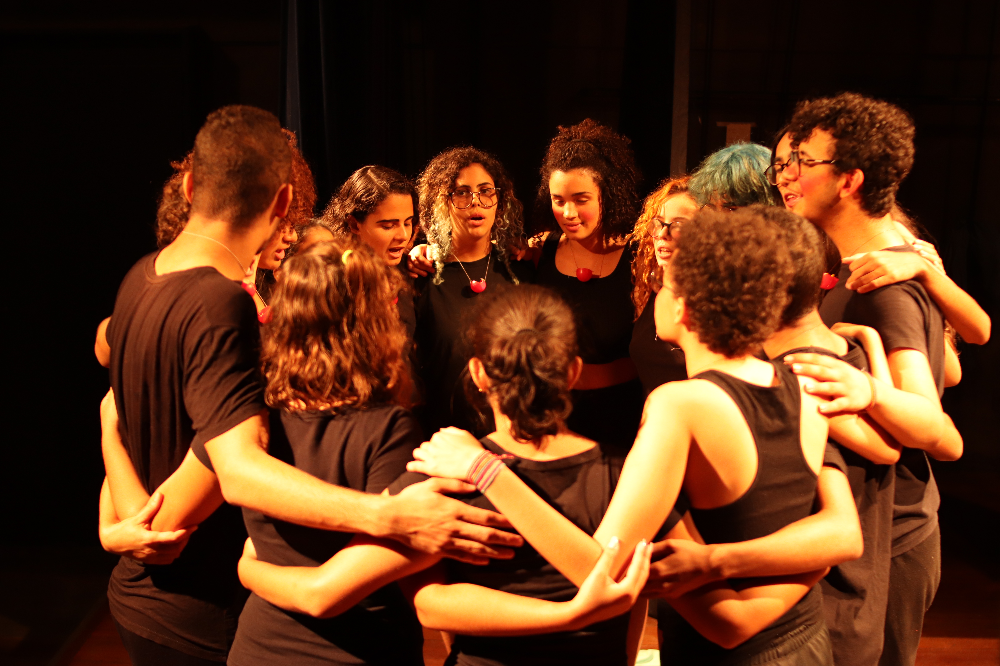
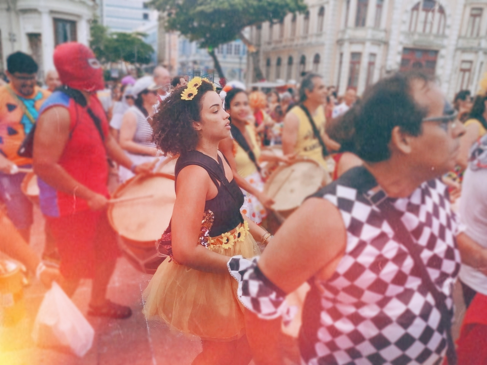
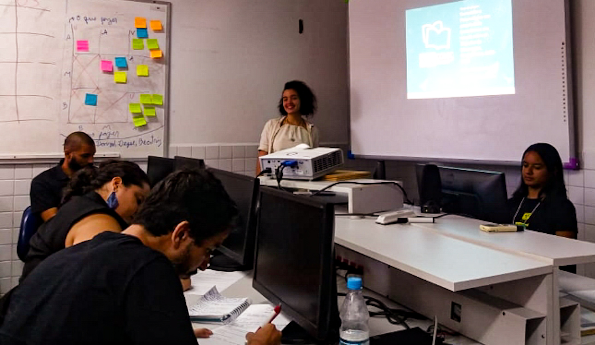

Coisas que mais gosto na vida:
Pessoas
Dar risada
Dias ensolarados e fresquinhos
Se a gente é o que vê, eu sou:
Harry Potter
Modern Family
Sex and the city
E se for o que lê?
"Corajosa Sim, Perfeita Não"
- Reshma Saujani
"Minha História"
- Michelle Obama
Merda!
O palco, a adrenalida, a vulnerabilidade, o medo, a coragem, a alegria, os agradecimentos e os aplausos. Atuar nunca foi fácil pra mim, o Teatro me encantava ao mesmo tempo que era muito desafiador, e essas experiências me ensinaram muito do eu que sou hoje.
Minha carne é de carnaval
Tocar Maracatu nas ladeiras de Olinda debaixo do sol QUENTE do sábado de Zé Pereira foi uma das experiências mais vibrantes e incríveis da minha vida. Chega lá no Kangoma!
"Posso não, to estudando"
Estudar sempre foi o meio de honrar minha família , meu caminho para crescer e conquistar o mundo. Dar o meu melhor academicamente, ser curiosa e ter uma mente aberta ao novo sempre foram princípios pessoais.
Foi amor a primeira vista?
Programar nunca tinha passado pela minha cabeça. Sou completamente o oposto do estereotipo de programador e a curiosidade de descobrir que barreira invisível era essa que me manteve distante por tanto tempo acabou virando um amor por tecnologia que me trouxe até aqui. De lá pra cá, conheci muita coisa boa e gente incrível, encontrei uma atmosfera que faz sentido com quem eu sou, vi possibilidades de mudar a realidade ao meu redor e isso me conquistou.